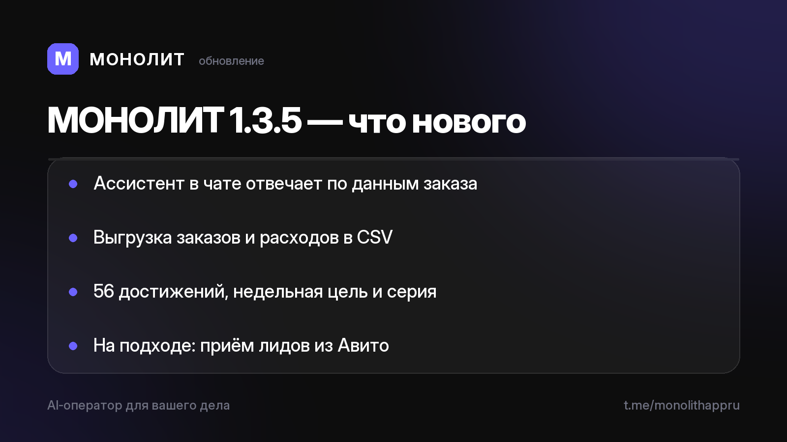

Дневник разработки · 06.07.2026
МОНОЛИТ 1.3.5 Beta — ассистент в чатах поумнел

После большого обновления облика (1.3.0) добивали суть. Главное:
💬 Ассистент в чате проекта поумнел. Спросите прямо в чате заказа «что по сумме», «какой срок», «кто в команде» — ответит по реальным данным этого заказа и всей вашей базы, а не общей заглушкой. Оффлайн вместо отписки даёт короткую сводку.
📊 Выгрузка для бухгалтера. Заказы и расходы одним тапом уходят в два файла CSV — открываются в Excel, Google Таблицах и 1С. Суммы числом, даты по-человечески. Отдать за квартал или свести самому. Данные не заперты в приложении.
🏆 Достижения и ритм недели. 56 наград за стаж, объём и рабочие ситуации, недельная цель с серией — рутина стала видной, а прогресс заметным. Любимую награду можно вынести статусом в профиль.
🔌 На подходе — приём лидов из Авито. Обкатываем канал: новое обращение с площадки всплывает сигналом и ложится ассистенту на разбор, из переписки сразу черновик заказа. Дальше — другие площадки.
Тестируете на Android? Напишите @sbphotoshoter — пришлю свежий APK.
МОНОЛИТ — учёт заказов, клиентов и денег одной фразой. Windows и Android, бесплатная бета.
Скачать Читать канал